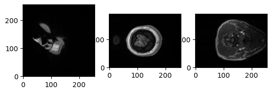
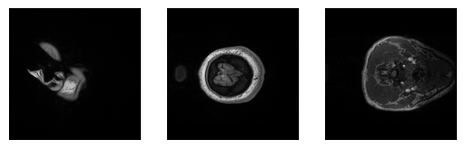
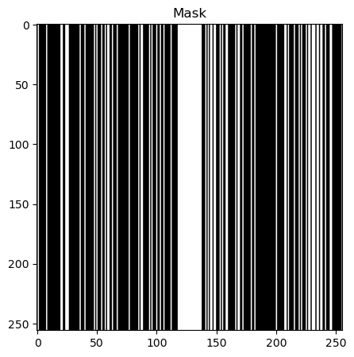
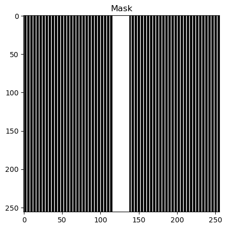
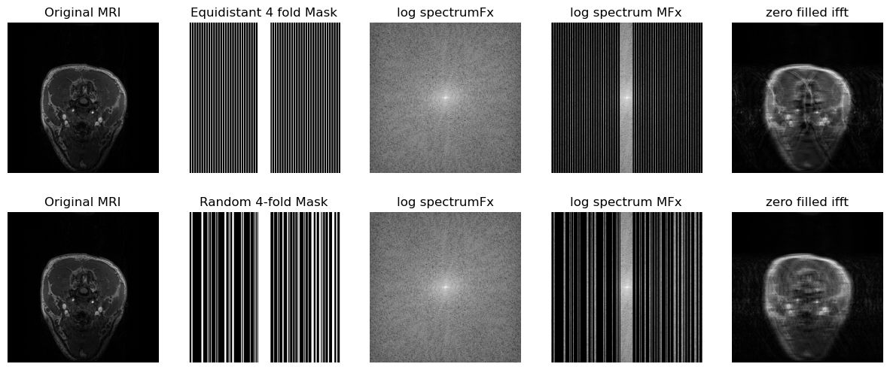
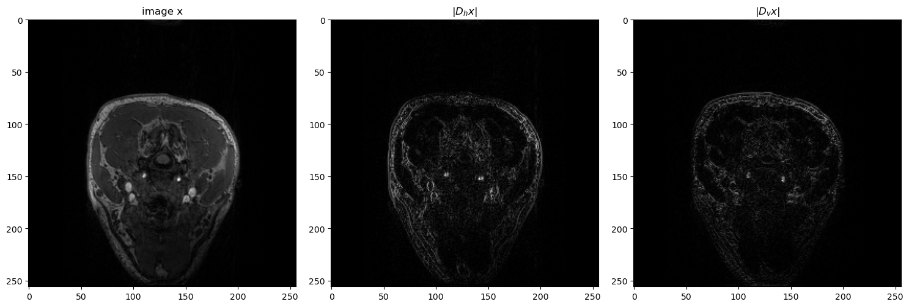
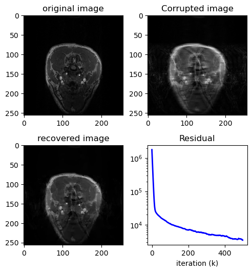

Compressed Sensing for MRI#

Import libraries#
import numpy as np
import cv2
from matplotlib import pyplot as plt
import scipy.signal as signal
from scipy.signal import convolve2d
import scipy.fft as fft
import urllib.request
from skimage.metrics import peak_signal_noise_ratio as PSNR
import time
import nibabel as nib
np.random.seed(30)
Import image#
file_path = "data/0219191_mystudy-0219-1114_anat_ses-01_T1w_20190219111436_5.nii.gz"
# file_path="/content/data/dicom_examples/nii/0219191_mystudy-0219-1114_anat_ses-01_scout_20190219111436_2_i00001.nii.gz"
t1_img = nib.load(file_path)
t1_data = t1_img.get_fdata()
x_slice = t1_data[9, :, :]
y_slice = t1_data[:, 19, :]
z_slice = t1_data[:, :, 2]
import matplotlib.pyplot as plt
%matplotlib inline
slices = [x_slice, y_slice, z_slice]
fig, axes = plt.subplots(1, len(slices))
for i, slice in enumerate(slices):
axes[i].imshow(slice, cmap="gray", origin="lower")

import numpy as np
import matplotlib.pyplot as plt
# Assuming x_slice, y_slice, and z_slice are the input images
slices = [x_slice, y_slice, z_slice]
# Find the maximum dimension among all images
max_dim = max(
[slice.shape[0] for slice in slices] + [slice.shape[1] for slice in slices]
)
# Create a new list to store the padded images
padded_slices = []
# Pad zeros to make each image square
for slice in slices:
height_diff = max_dim - slice.shape[0]
width_diff = max_dim - slice.shape[1]
pad_top = height_diff // 2
pad_bottom = height_diff - pad_top
pad_left = width_diff // 2
pad_right = width_diff - pad_left
padded_slice = np.pad(
slice, ((pad_top, pad_bottom), (pad_left, pad_right)), mode="constant"
)
padded_slices.append(padded_slice)
# Plot the padded images
fig, axes = plt.subplots(1, len(padded_slices))
for i, slice in enumerate(padded_slices):
axes[i].imshow(slice, cmap="gray", origin="lower")
for ax in axes.ravel():
ax.axis("off")

Define conv and fft functions#
def to_fourier_domain(x):
return fft.fftshift(fft.fft2(fft.ifftshift(x)))
def to_image_domain(x):
return fft.ifftshift(fft.ifft2(fft.fftshift(x)))
# Define some of the operators that we need...
def conv2d_fft(x, h):
p0 = x.shape[0] - h.shape[0]
p1 = x.shape[1] - h.shape[1]
h_pad = np.pad(h, ((p0 // 2, p0 // 2), (p1 // 2, p1 // 2)))
Fh = to_fourier_domain(h_pad)
Fx = to_fourier_domain(x)
return to_image_domain(Fx * Fh)
def conv2dT_fft(x, h):
p0 = x.shape[0] - h.shape[0]
p1 = x.shape[1] - h.shape[1]
h_pad = np.pad(h, ((p0 // 2, p0 // 2), (p1 // 2, p1 // 2)))
Fh = to_fourier_domain(h_pad)
Fx = to_fourier_domain(x)
return to_image_domain(Fx * np.conj(Fh))
Create the binary mask#
According to FastMRI paper
def generate_random_mask(img_shape, center_percentage=8):
mask = np.zeros(img_shape)
center_columns = int(img_shape[1] * center_percentage / 100)
center_start = int(img_shape[1] / 2) - int(center_columns / 2)
center_end = center_start + center_columns
for col in range(center_start, center_end):
mask[:, col] = 1
num_random_cols = int(0.25 * img_shape[1])
random_cols = np.random.choice(
[i for i in range(img_shape[1]) if i < center_start or i >= center_end],
num_random_cols,
replace=False,
)
for col in random_cols:
mask[:, col] = 1
return mask.astype(int)
rmask = generate_random_mask(
x_slice.shape
) # generate a 100x100 mask with 30% center columns
# plot mask and mask_fft together
fig, axs = plt.subplots(1, 1, figsize=(10, 5))
axs.imshow(rmask, cmap="gray")
axs.set_title("Mask")
plt.show()

# assuming img_shape to be square, shape is of type (x,x) -> (512,512)
def generate_equidistant_mask(img_shape, acceleration_factor=4, center_percentage=25):
mask = np.zeros(img_shape, dtype=np.float32)
mask[::acceleration_factor] = 1.0
# Set center_percentage% of the center lines to all ones
fraction = 100 // center_percentage
center_lines = img_shape[0] // fraction
start = (img_shape[0] - center_lines) // 2
end = start + center_lines
mask[start:end] = 1.0
return mask.T
eq_mask = generate_equidistant_mask(
x_slice.shape, acceleration_factor=4, center_percentage=8
)
# plot mask and mask_fft together
fig, axs = plt.subplots(1, 1, figsize=(10, 5))
axs.imshow(eq_mask, cmap="gray")
axs.set_title("Mask")
plt.show()

def get_log_spectrum(fft_data):
return 20 * np.log(np.abs(fft_data) + 1)
# Input image for processing
x = padded_slices[2]
# Equidistant Mask
eq_mask = generate_equidistant_mask(
x.T.shape, acceleration_factor=4, center_percentage=8
)
# Random Mask
rmask = generate_random_mask(x.shape)
# Computing ploting parameters
def param(x, mask):
spectrum_image = to_fourier_domain(x.T)
masked_spectrum = spectrum_image * mask
zero_filled_ifft = to_image_domain(masked_spectrum * mask)
return spectrum_image, masked_spectrum, zero_filled_ifft
# Computing parameters for random mask and equidistant mask
spectrum_image, masked_spectrum, zero_filled_ifft = param(x, eq_mask)
spectrum_image_r, masked_spectrum_r, zero_filled_ifft_r = param(x, rmask)
fig, axs = plt.subplots(2, 5, figsize=(15, 6))
axs[0, 0].imshow(x.T, cmap="gray")
axs[0, 0].set_title("Original MRI")
axs[0, 1].imshow(eq_mask, cmap="gray")
axs[0, 1].set_title("Equidistant 4 fold Mask")
axs[0, 2].imshow(get_log_spectrum(spectrum_image), cmap="gray")
axs[0, 2].set_title("log spectrumFx")
axs[0, 3].imshow(get_log_spectrum(masked_spectrum), cmap="gray")
axs[0, 3].set_title("log spectrum MFx")
axs[0, 4].imshow(np.abs(zero_filled_ifft), cmap="gray")
axs[0, 4].set_title("zero filled ifft")
axs[1, 0].imshow(x.T, cmap="gray")
axs[1, 0].set_title("Original MRI")
axs[1, 1].imshow(rmask, cmap="gray")
axs[1, 1].set_title("Random 4-fold Mask")
axs[1, 2].imshow(get_log_spectrum(spectrum_image_r), cmap="gray")
axs[1, 2].set_title("log spectrumFx")
axs[1, 3].imshow(get_log_spectrum(masked_spectrum_r), cmap="gray")
axs[1, 3].set_title("log spectrum MFx")
axs[1, 4].imshow(np.abs(zero_filled_ifft_r), cmap="gray")
axs[1, 4].set_title("zero filled ifft")
for ax in axs.ravel():
ax.axis("off")
plt.show()

Gradiant operator#
# define gradient operators
"""
I am testing it with y1 for now
"""
dh = np.array([[1, -1], [0, 0]]) # horizontal gradient filter
dv = np.array([[1, 0], [-1, 0]]) # vertical gradient filter
Dh = lambda x: conv2d_fft(x, dh)
Dv = lambda x: conv2d_fft(x, dv)
DhT = lambda x: conv2dT_fft(x, dh)
DvT = lambda x: conv2dT_fft(x, dv)
# plot the image x and the gradient images Dh x and Dv x
fig = plt.figure(figsize=(15, 15))
plt.subplot(131)
plt.imshow(x.T, cmap="gray")
plt.title("image x")
plt.subplot(132)
plt.imshow(np.abs(Dh(x.T)), cmap="gray")
plt.title(r"$|D_hx|$")
plt.subplot(133)
plt.imshow(np.abs(Dv(x.T)), cmap="gray")
plt.title(r"$|D_vx|$")
plt.tight_layout()
plt.show()

TV Primal Dual#
TV Compress Sensing MRI using Primal Dual
def TV_MRI(MFx, M, lamb=2, maxiter=50, tol=1e-4):
"""
TV-Compress Senssing MRI solver to solve
minimize 0.5 |z-Hx|_2^2 + lambda|Dx|_1
z : reconstructed img in each update
x : original image
Hx: masked image
"""
start = time.time()
# define the soft-thresholding function
soft_thresh = lambda v, t: np.maximum(np.abs(v) - t, 0.0) * np.sign(v)
# set step-sizes at maximum: τσL² < 1
# note: PDS seems sensitive to these (given finite iterations at least...)
L = np.sqrt(8) # Spectral norm of D
tao = 0.99 / L
sigma = 0.99 / L
# Defining Prox functions
"""
z^k+1 = prox_tg(z^k-tD^Ty^k)
y^k+1 = prox_sigmaf*(y^k+sigmaDx^k+1)
"""
# Proximal Gradient Descent on x (primal)
prox_D = lambda v, z: to_image_domain(
(to_fourier_domain(v) + tao * z) / (1 + tao * M)
)
# Proximal Gradient Ascent on z (dual)
# prox_A = lambda v: (v - sigma*soft_thresh(v/sigma, lamb/sigma))
prox_A = lambda v: np.clip(v, -lamb, lamb)
# -----------------------------
# initilize iteration variables
z_hat = np.zeros_like(MFx)
yh_hat = np.zeros_like(MFx)
yv_hat = np.zeros_like(MFx)
# For computing error
J = np.zeros(maxiter)
# Iterations
k = 0
while k < maxiter:
# Update x - ProxD
z_old = z_hat
z_hat = prox_D(z_hat - tao * (DhT(yh_hat) + DvT(yv_hat)), MFx)
# Update y - ProxA
yh_hat = prox_A(yh_hat + sigma * (Dh(2 * z_hat - z_old)))
yv_hat = prox_A(yv_hat + sigma * (Dv(2 * z_hat - z_old)))
# compute the convergence
# dual_h = Dh(z_hat) - yh_hat
# dual_v = Dv(z_hat) - yv_hat
# J[k] = (dual_h**2).sum()+(dual_v**2).sum()
J[k] = np.abs(z_hat - z_old).sum()
if J[k] < tol:
break
k = k + 1
end = time.time()
return z_hat, J, end - start
x_t, j, duration1 = TV_MRI(masked_spectrum, eq_mask, lamb=5, maxiter=500, tol=1e-2)
x_t_ifft = to_image_domain(x_t)
fig = plt.figure()
fig.set_size_inches(5, 7.5)
ax = fig.add_subplot(321)
ax.imshow(x.T, cmap="gray")
plt.title("original image")
ax2 = fig.add_subplot(322)
ax2.imshow(np.abs(zero_filled_ifft), cmap="gray")
plt.title("Corrupted image")
ax3 = fig.add_subplot(323)
ax3.imshow(np.abs(x_t), cmap="gray")
plt.title("recovered image")
ax4 = fig.add_subplot(324)
ax4.semilogy(range(len(j)), j, "b-", lw=2)
plt.title("Residual")
plt.xlabel("iteration (k)")
plt.tight_layout()
plt.show()
print(f"Time taken = {duration1}")

Time taken = 7.693760633468628
PSNR(x.T, np.abs(zero_filled_ifft), data_range=np.max(np.abs(x)))
28.910346296010466
PSNR(x.T, np.abs(x_t), data_range=np.max(np.abs(x)))
31.11096519230359
x_tr, jr, duration1r = TV_MRI(masked_spectrum_r, rmask, lamb=5, maxiter=500, tol=1e-2)
fig = plt.figure()
fig.set_size_inches(5, 7.5)
ax = fig.add_subplot(321)
ax.imshow(x.T, cmap="gray")
plt.title("original image")
ax2 = fig.add_subplot(322)
ax2.imshow(np.abs(zero_filled_ifft_r), cmap="gray")
plt.title("Corrupted image")
ax3 = fig.add_subplot(323)
ax3.imshow(np.abs(x_tr), cmap="gray")
plt.title("recovered image")
ax4 = fig.add_subplot(324)
ax4.semilogy(range(len(jr)), jr, "b-", lw=2)
plt.title("Residual")
plt.xlabel("iteration (k)")
plt.tight_layout()
plt.show()
print(f"Time taken = {duration1r}")
Time taken = 7.645873546600342
PSNR(x.T, np.abs(zero_filled_ifft_r), data_range=np.max(np.abs(x)))
28.999801885609365
PSNR(x.T, np.abs(x_tr), data_range=np.max(np.abs(x)))
33.28850707391314
fig, axs = plt.subplots(1, 1, figsize=(15, 6))
axs.semilogy(range(len(jr)), jr, "b-", lw=2, label="Random Mask")
axs.semilogy(range(len(j)), j, "r+", lw=2, label="Equidistant Mask")
plt.title("Residual")
plt.legend()
<matplotlib.legend.Legend at 0x7f3062d97850>